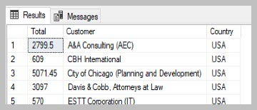
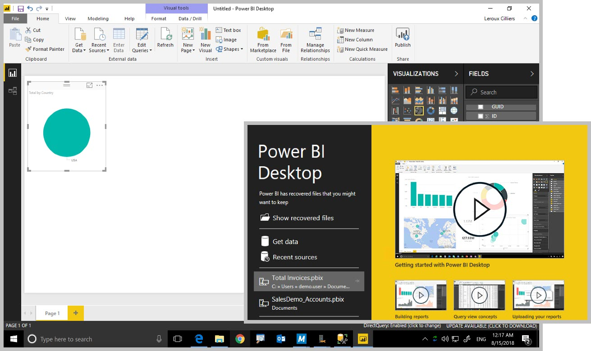

Using Power BI for reporting¶
In this use case we demonstrate how Power BI is connected to a Connector class table or view.
Enabling the Connector for Power BI has a few steps to prepare the data. Once the data is prepared one need to consider the frequency or trigger for updating the data. Connecting Power BI with the data comes next and finally one need to consider how the user will trigger the report..
After installing the data exchange module of the Connector and refreshing the metadata structure, the first step is to decide on the data source for the report. All the related classes are then created using spMFCreateTable.
In our example we would like to create a report on value of invoices from customers by customer region. The value and date of invoices is in the invoice class table. The name of the customer is on the invoice, however, we also need the region of the customer found on the customer class. We therefore need to create class tables for both sales invoices and customers
-- check the classes
SELECT * FROM [dbo].[MFClass] AS [mc]
--create class tables
EXEC spmfcreatetable 'Customer'
EXEC spmfcreatetable 'Sales Invoice'
--VIEW the created tables
SELECT * FROM MFCustomer
SELECT * FROM MFSalesInvoice
The newly created tables does not have data in (yet). Assess the number of records in the classes before starting the update process. Less than 10 000 records requires no special consideration. Updating records would average at between 8 and 20 records per second. Plan around updating larger quantities of records and make use of batching (see example scripts) of the updates.
Once the volume of data and plan for data take-on is established, the process can be started.
EXEC spmfupdatetable 'MFCustomer',1
EXEC spmfupdatetable 'MFSalesInvoice',1
Note the way the class tables display both id and the label in the case of lookups. This applies to both valuelists (e.g. country) and Customer (object type). This implies there is no need to do a join on the class table to get the name of the country. Or a summary of invoices by customer does not require a join with the customer table. The Connector tables are significantly easier to use for reporting that fully normalised data tables which will require many more joins to make.
The next step is to create a view to drive the report.
In our case we do need to join the sales table with the customer table because the region (country) is not available on the sales invoices.
CREATE VIEW custom.PBI_TotalSalesByRegion
AS
SELECT SUM(Total) AS Total, Customer, [mc].[Country]
FROM MFSalesInvoice si
CROSS APPLY [dbo].[fnMFParseDelimitedString](Customer_ID,',') AS [fmpds]
INNER JOIN MFCustomer mc
ON mc.objid = fmpds.[ListItem]
GROUP BY Customer, [mc].[Country]
GO
Note the use of a cross apply to deal with the multilookup of the customers on the invoice table.

With the data prepared for the report, we can switch to connecting the table with Power BI. In our example we are using Power BI desktop edition.
After installing Power BI one can point to Get Data option to the SQL Server. One can either point directly to the table, or to the view.

The report is designed and published in Power BI

The final step is to consider how the data for the report will be refreshed.
Doing nothing else will result in the a scenario where any updates or changes in M-Files does not flow through to the report. Triggering the update has various options depending on the timeframe of updates to become available. Consider the balance of reducing the timeframe, increasing the automation, and optimising the performance of the query/procedure when selecting the appropriate option. Consult other blogs which goes into more depth on configuring the options. In short the options are
Add the update as part of a scheduled agent job in SQL. The update frequency is determined by the agent schedule.
Add the update as part of the context menu action (state change, event handler, menu option) - this option is not available in M-Files cloud
Include the update in a procedure also producing the data table as an output. Use Direct Query in Power BI as the data source.